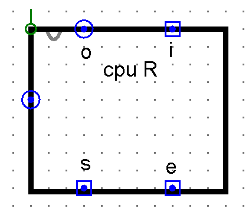
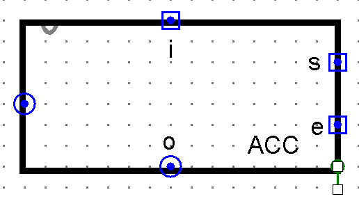
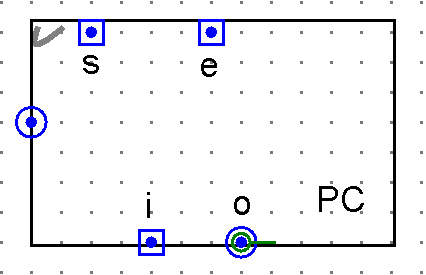
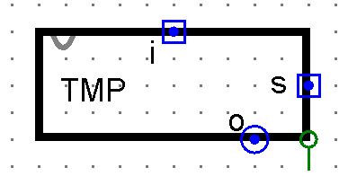
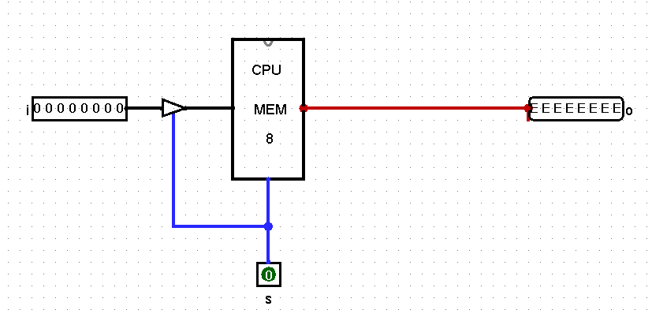
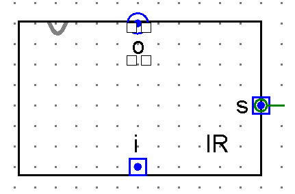

Additional Circuits Required for the CPU
To fully complete the CPU design, several auxiliary circuits and components are required in addition to the main **RAM, ALU, and Control Unit**. The conceptual layout below highlights these components:

Component Details Grouped by Type
The additional circuits needed can be categorized into three groups based on their core function or design:
1. Register-Based Components
These components are all **8-bit Registers** and share the same underlying memory cell design as the main RAM's registers. They are primarily used to hold data or addresses that need to be output onto the bus.
-
**R0, R1, R2, R3 (General Registers):** Standard 8-bit memory registers used for general data manipulation. You should rename them R0-R3 (instead of R1-R4) for consistency.

-
**ACC (Accumulator):** An 8-bit Register circuit used to temporarily store the result of the ALU operation before it is written back to a general-purpose register or memory.

-
**PC (Program Counter):** An 8-bit Register circuit that holds the address of the next instruction to be fetched.

2. Memory Circuit-Based Components
These components use the standard **8-bit memory circuit** that forms the basis of all registers. They are given unique names and/or circuit appearances to serve specialized roles within the CPU.
-
**TMP (Temporary Register):** An 8-bit memory location used to store data being sent to **ALU input B**. It requires a modified appearance to fit the CPU layout.
NOTE: A slight modification to the basic 8-bit memory circuit is needed for TMP by adding a **Controlled Buffer** to the input side before the Set input.
  -
**IR (Instruction Register):** An 8-bit memory circuit that holds the current instruction being executed. Though conceptually a register, it is implemented as a simple memory circuit in this simulation.

3. Other Control Circuits
These circuits serve specialized control or synchronization functions within the CPU architecture and are not derived from the 8-bit memory circuit.
- **bus1 (ALU Input B Controller):** A critical control element required for selecting the appropriate input for **ALU input B** (either the TMP register or the Instruction Register).
- **clk (Clock):** A clock simulator component required for synchronized stepping through the CPU operations.
Final Circuit Component List References
For a comprehensive list of all required circuits, please refer to the summary pages: